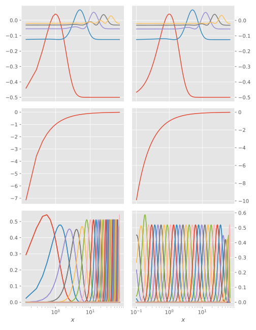

Eigenproblems
Since the B-spline basis is non-orthogonal, eigenproblems become generalized when projecting the operators onto the space $\space{P}_{t,k}$, as mentioned in Solving equations. ArnoldiMethod.jl is primarily designed to solve standard eigenproblems of the form $\mat{A}\vec{x} = \lambda \vec{x}$, and furthermore, as all Krylov methods, it is best at finding the eigenvalues which have the largest magnitude. To solve generalized eigenproblems on the form $\mat{A}\vec{x} = \lambda \mat{B}\vec{x}$, and additionally looking for an interior eigenvalue, we can employ the shift-and-invert trick mentioned in the ArnoldiMethod.jl manual, reiterated here:
Instead of iterating $\mat{A}\vec{V}_i$ on various test vectors $\vec{V}_i$, we iterate the shifted and inverted matrix $[\mat{B}^{-1}(\mat{A}-\sigma\mat{B})]^{-1}\vec{V}_i=(\mat{A}-\sigma\mat{B})^{-1}\mat{B}\vec{V}_i$, where $\sigma$ is a shift in whose vicinity we hope to find the true eigenvalue.
This can be accomplished with the aid of this struct:
struct ShiftAndInvert{TA,TB,TT}
A⁻¹::TA
B::TB
temp::TT
end
Base.size(S::ShiftAndInvert, args...) = size(S.A⁻¹, args...)
Base.eltype(S::ShiftAndInvert) = eltype(S.A⁻¹)
function LinearAlgebra.mul!(y,M::ShiftAndInvert,x)
mul!(M.temp, M.B, x)
ldiv!(y, M.A⁻¹, M.temp)
end
construct_linear_map(A,B,σ=0) =
ShiftAndInvert(factorize(A-σ*B),B,Vector{eltype(A)}(undef, size(A,1)))Non-relativistic hydrogen (Schrödinger equation)
The eigenstates of non-relativistic hydrogen obey the following time-independent Schrödinger equation (in atomic units):
where the Hamiltonian is given by
By going over to spherical coordinates
and employing reduced wavefuntions
we can rewrite the radial equation as
This equation can be solved with B-splines (and exactly).
We will yet again (as in Diagonal operators) illustrate the effect of different knot sets on the solution. Again, we use the following two basis sets:
julia> k = 7
7
julia> N = 31
31
julia> a,b = 0,70
(0, 70)
julia> coulomb(r) = -1/r
coulomb (generic function with 1 method)
julia> tlin = LinearKnotSet(k, a, b, N);
julia> texp = ExpKnotSet(k, -1.0, log10(b), N);
julia> Blin = BSpline(tlin,3)[:,2:end-1]
BSpline{Float64} basis with LinearKnotSet(Float64) of order k = 7 on 0.0..70.0 (31 intervals), restricted to basis functions 2..36 ⊂ 1..37
julia> Bexp = BSpline(texp,3)[:,2:end-1]
BSpline{Float64} basis with ExpKnotSet(Float64) of on order k = 7 on 0,0.1..70.00000000000001 (31 intervals), restricted to basis functions 2..36 ⊂ 1..37Then, for B=Blin and B=Bexp, we do (considering only $\ell=0$):
nev = 5
σ = -0.5 # Target eigenvalue
S = B'B
D = Derivative(axes(B, 1))
∇² = B'D'D*B
T = -∇²/2
V = Matrix(coulomb, B)
H = T + V
schurQR,history = partialschur(construct_linear_map(H, S, σ), nev=nev)
θ = schurQR.eigenvalues
E = real(σ .+ inv.(θ))The exact eigenenergies for hydrogen are given by (independent of $\ell$ due to the accidental Coulomb degeneracy):
Especially the ground state wavefunction is vastly improved by the exponential knot set:
| $n$ | $E_n$ exact | $E_n$ linear | $\delta E_n$ linear | $E_n$ exponential | $\delta E_n$ exponential |
|---|---|---|---|---|---|
| 1 | -0.50000 | -0.50000 | 4.09551e-06 | -0.50000 | 5.82062e-12 |
| 2 | -0.12500 | -0.12500 | 1.33518e-07 | -0.12500 | -2.68710e-07 |
| 3 | -0.05556 | -0.05556 | 1.68308e-08 | -0.05556 | 2.61414e-07 |
| 4 | -0.03125 | -0.03125 | 5.77127e-08 | -0.03125 | 8.72813e-08 |
| 5 | -0.02000 | -0.01994 | 5.60046e-05 | -0.01994 | 5.63700e-05 |
